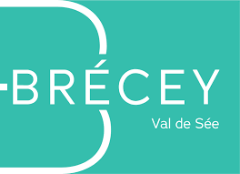

1
Quels lieux doivent être accessibles à vélo ?
Cliquez sur la carte pour placer un point, puis expliquez pourquoi ce lieu est important.

Cliquez sur la carte pour placer un point, puis expliquez pourquoi ce lieu est important.